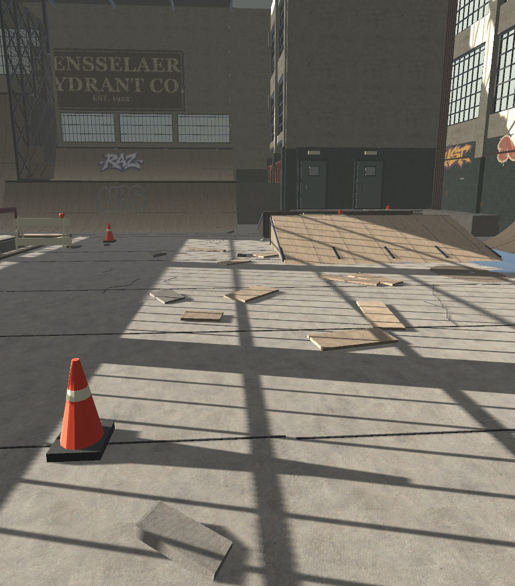
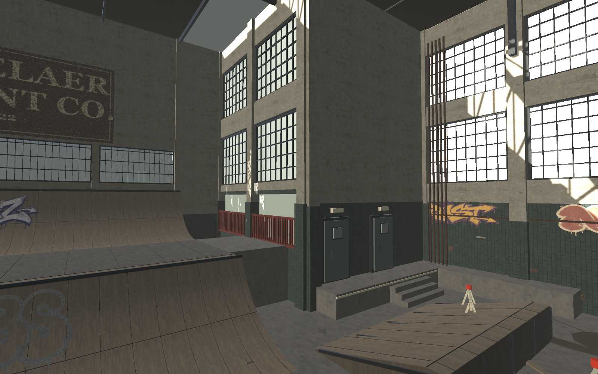
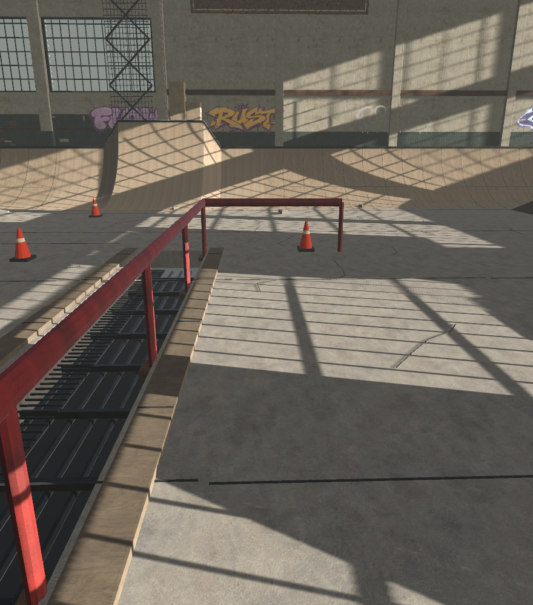
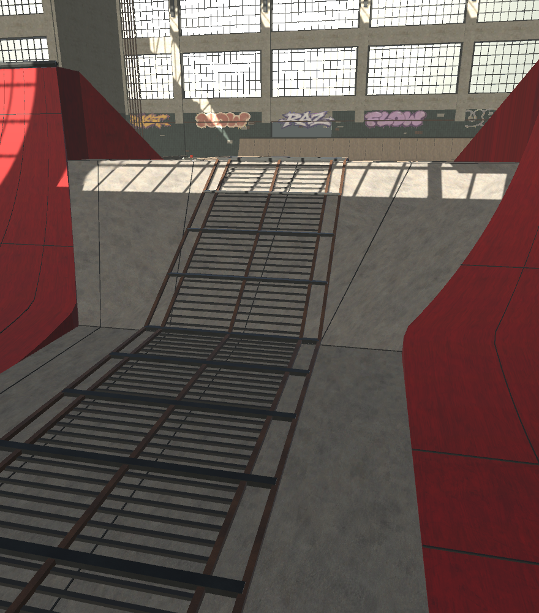
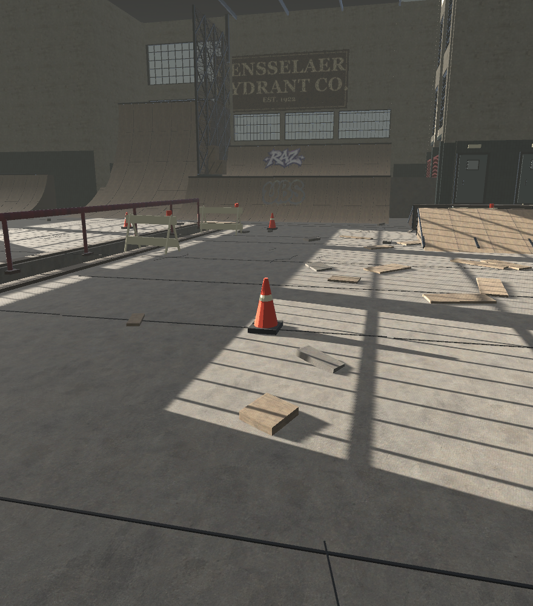
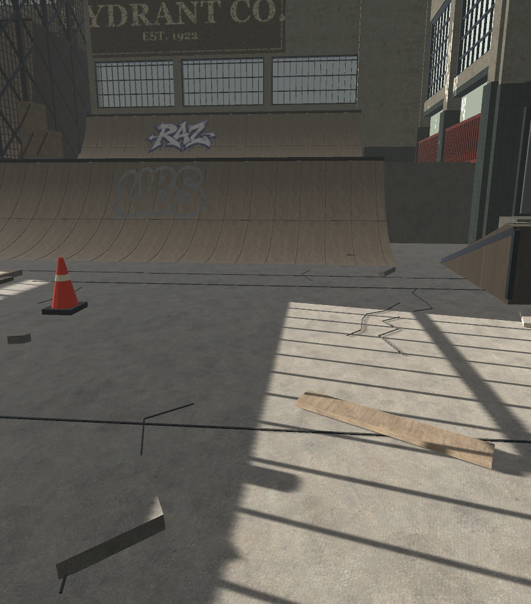
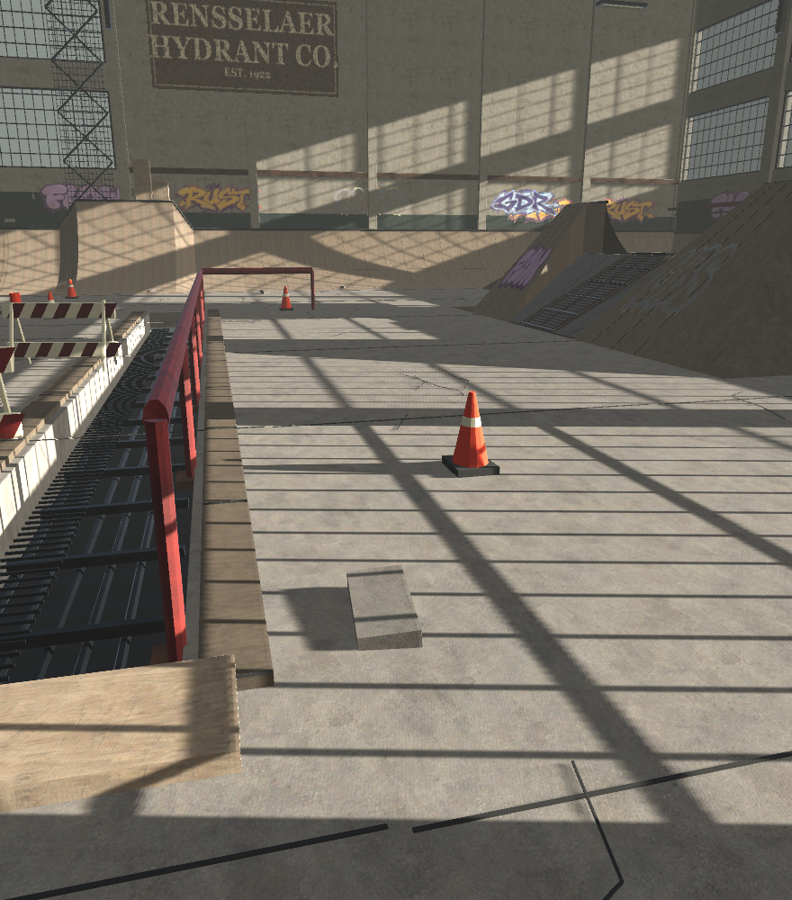
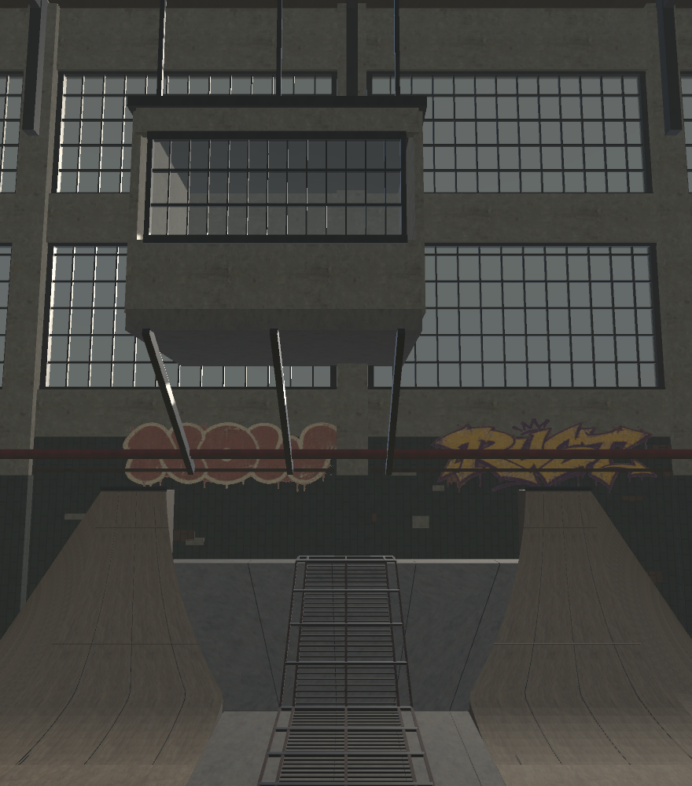

WAREHOUSE / STRUCTURE DETAIL AUDIT / V6
凸出的门台建筑、平平台与通道两旁的坡面
V5 的起点少量结构点对齐，并没有覆盖右侧建筑和半管，不能据此判断全场已经一致。本轮按新指出的三处问题直接改了模型：补出凸出的门台建筑；恢复扶手前方与右侧的平地及北端平顶平台；重做金属通道向外展开的出口和两侧曲坡。
① 1:33 · 门台是一段伸入大厅的建筑
旧模型把门贴在一面平墙上，侧面没有表现出来。现在正面向大厅突出约 2.2 m，左侧向后连接厂牌开间，补上两层窗、立柱和下部橙色栏栅；正面有两扇门、门灯、低平台与三级踏步。这一组相机与 V5 的 1:33 相机相同。


下面用独立近景展示新增几何，方便检查侧面，不作为同机位匹配证据。

门窗细节、橙色栏栅的密度和侧面露出宽度仍有差异；建筑尺寸属于截图推断值。
② 1:39 · 平顶高台，扶手前后留出平地
原来的高台顶边是宽缓的隆起，已经改为有明确水平顶面的局部高台，并保留两侧接回低弧坡的过渡。补宽左侧窗区，让铁笼位于窗区边缘。半管南北向占地由约 19.8 m 缩至 13.46 m，向东收进；扶手正前方放错的破损小台也移到了后场偏右。相机位置和角度与 V5 的 1:39 相同。


高台宽度、箱子摆位和施工挡板还不是逐像素一致；顶部水平和开放地面的几何、碰撞已经单独检查。
③ 1:52 · 灰色通道向坡顶展开，两侧曲坡伸入前景
此前是等宽的窄开口，曲坡也太短，红色坡面的侧边轮廓没有做出来。现已把木坡的弧段加长，中央灰色开口由底部约 3.54 m 展开到坡顶约 7 m，中央格栅保持约 1.90 m 宽。两侧木坡顶约 3.11 m，金属顶约 1.72 m。


这里的镜头随新通道位置调整为略偏一侧的朝向，以对应原图斜着看向出口的视角；没有拉伸渲染图片。红色只用于这张对照渲染，基础场景仍保留 1:32 时的木色。两张图使用同一网格，查看木色版本。

展开宽度和曲率仍是根据截图估计；前景红坡轮廓、格栅分段与镜头尚有偏差。未实现动态占领玩法。
门台同机位叠图：V5 / V6
0% 看 Unity，100% 看参考，中间值查看边缘错位。参考只裁出左半屏；原图人物和字幕仍保留。
同一份场景的其他路线截图
主相机仍是橙衣玩家起点，Game View 使用 880 × 1000。1:32、1:33、1:35、1:38、1:39 的相机沿用 V5；金属通道机位随结构更新。没有为不同机位分别摆放模型。






保存与验证
| 检查 | 结果 |
|---|---|
| 场景保存 / 重开 | 82 个网格、107358 个三角形、45 个静态碰撞体；材质和引用完整。 |
| 新增门台建筑 | 正面突出位置、侧面立柱和三级踏步支撑检查通过。 |
| 高台 / 开放地面 | 4 处水平顶面采样，3 处扶手前方及右侧地面采样通过。 |
| 弧坡 / 通道 | 70 处弧面采样、243 处连续通道支撑、5 处展开坡顶横向支撑通过。 |
| 红色参考状态 | 对照渲染后恢复材质；保存场景未残留临时红色覆盖。 |
完整验证输出。这些是几何有效性检查，不是图像相似度认证。窗格、污渍、涂鸦、杂物、灯光和若干距离仍不等同原作；未测试滑板或 Leap Motion 操控手感。
场景：Assets/Max/WarehouseRecreation.unity。原 Assets/Max/MaxScene.unity 未替换。本轮修改前备份：Source~/BeforeStructureDetailAudit~。上一轮报告及全部旧预览在备份中保留。生成器会覆盖生成资产，手工调整前请另存。